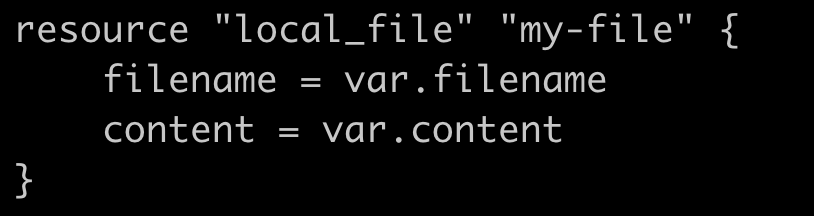
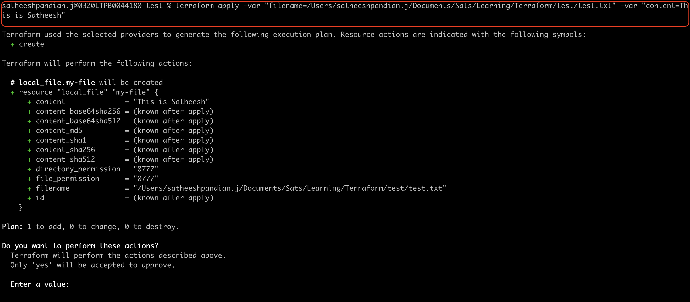

Terraform Basics
When we run the terraform init command in a directory contains configuration file,
terraform downloads the plugin and install them for the providers mentioned (AWS/Azure/GCP/Ali) in the configuration file.
Terraform plugins are available in Hashicorp registry https://registry.terraform.io for all the providers. There are three different providers.
- **Official Providers**: Owned and maintained by Hashicorp **Example**: AWS, Azure, GCP and Local providers
- **Partner Providers**: Owned and maintained by third party company that has partner provider access with Hashicorp **Example**: Heroku, F5, Digital Ocean
- **Community Providers**: Published and maintained by individual contributors of Hashicorp community **Example**: NetappGCP, Active Directory
When we run the command terraform init, it will show the version of the plugin is installed.
{kind=link}
In the above snapshot, hashicorp/local is known as source address.
This is used to identify the provider.
After identifying the provider, it will download the plugins from the provider and install it.
terraform init command is a safe command, and it can be run as many times needed without impacting the actual infrastructure.
All plugins are downloaded into <working directory>/.terraform directory.
When we download the plugins
(during terraform init command), this will tell you where the plugins are from.
<Hostname>/<Organisation namespace>/<Provider name>
Whereas,
Hostname is the name of the registry where the plugin is located, and it is optional. If it is not mentioned, then it is default value (registry.terraform.io)
Organisation namespace is Hashicorp/Partner Provider/Community Provider
Provider name is AWS/Azure/GCP/Local etc.,
Configuration Directory
Terraform considers the file with .tf extension is a configuration file.
A single configuration file can have any number of configuration details
(Like main.tf has multiple resource configurations).
Also, we can have any number of configuration files as well in a directory (Like cat.tf, dog.tf and main.tf). There are few other common configuration files created in a directory.
| Filename | Purpose |
|---|---|
| main.tf | main configuration file |
| variables.tf | Contains variable declaration |
| outputs.tf | Contains output from resources |
| providers.tf | Contains provider definitions |
Multiple Providers
You can create a configuration file which contains multiple providers like below.
{kind=link}
{kind=link}
NOTE: Let us assume that there are two configurations defined in the configuration file.
Both have different plugins and one of the plugin is already installed and other one is not yet installed
(Meaning terraform init command has executed for only one plugin)
In that case, if you run terraform plan / terraform apply command will yield an error.
This is because whenever we add a resource for a provider that has not been used so far in the configuration directory,
we have to initialize the directory by running terraform init command.
Input Variables
For re-usability, we can use variables. To do so, we can create a variable.tf file and update all variables in it. In general, whatever arguments we are passing in block, we can use variable for those arguments. Remember, both variable configuration file and your main configuration file should be in the same directory.
Syntax
Example
resource "local_sensitive_file" "games" {
filename = "/Users/satheeshpandian.j/Documents/Sats/Learning/Terraform/names.txt"
content = "I am Satheesh and this is terraform update example"
}
variable "filename" {
default = "/Users/satheeshpandian.j/Documents/Sats/Learning/Terraform/names.txt"
}
variable "content" {
default = "I am Satheesh and this is terraform update example"
}
Now, our main configuration file "main.tf" needs to be updated like below
In case you want to change the content or filename, you just need to update it in variable.tf configuration file. You DO NOT touch main configuration file at all.
Variable Types
In variable block, there are different parameters used.
variable <VARIABLE_NAME> {
default = <value>
type = <ANY/STRING/NUMBER/BOOL/LIST/MAP/OBJECT/TUPLE>
description = <description of the value>
}
Whereas,
type and description are optional. If you don't use type parameter, it will consider as any by default.
If you use type parameter, then it will make sure that default value should have the same type.
List
List will be used with its index and index starts from 0
variable "names" {
default = ["Satheesh", "Pandian", "Jeganathan", "Bangalore", "Karnataka"]
type = list
description = "List of names"
}
We can enforce the list values using STRING/NUMBER/BOOL.
variable "names" {
default = ["Satheesh", "Pandian", "Jeganathan", "Bangalore", "Karnataka"]
type = list(string)
description = "List of names"
}
string. It will throw an error if you pass the number or boolean value.
variable "names" {
default = [5, 7, 8, 10, 23]
type = list(number)
description = "List of numbers"
}
{kind=link}
{kind=link}
{kind=link}
This will ensure that all the default values should be number. It will throw an error if you pass the string or boolean value.
{kind=link}
{kind=link}
Map
Map will be in key/value format.
variable "names" {
default = {
"firstname" = "Satheesh"
"lastname" = "Pandian"
}
type = map
description = "map of names"
}
We can enforce the map values using STRING/NUMBER/BOOL.
variable "names" {
default = {
"firstname" = "Satheesh"
"lastname" = "Pandian"
}
type = map(string)
description = "Map of names"
}
string. It will throw an error if you pass the number or boolean value.
variable "names" {
default = {
"favourite" = 5
"birthdate" = 10
"anniversary" = 23
}
type = map(number)
description = "Map of numbers"
}
Sets
This is similar to list except that list can have duplicate elements whereas sets won't allow duplicate elements.

Duplication example
{kind=link}
{kind=link}
Object
Object is a custom variable type. You can have combination all other variable type using object.
variable "player" {
default = {
"name" = "Satheesh"
"age" = 20
"favourite_place" = ["Bangalore", "Chennai", "Mumbai"]
"working_location" = {
"state" = "Karnataka"
"city" = "Bangalore"
}
}
type = object({
"name" = string
"age" = number
"favourite_place" = list(string)
"working_location" = map(string)
})
description = "Map of numbers"
}
{kind=link}
{kind=link}
{kind=link}
Tuples
This is similar to list except that tuples can have all variable type.
variable "names" {
default = [5, 7, "Satheesh", true, 4]
type = tuple([number, number, string, bool, number])
description = "Tuple example"
}
Ways to use variable in terraform
-
We can create
variable.tffile and put all the variables and then use it inmain.tf. You can refer all the above cases for this type of usage. -
During runtime via terminal (Interactive Mode):
To do this, we need to create a
variable.tffile. But we don't need to update any variable, just keep at empty.
{kind=link}
{kind=link}
-
Via command line arguments
To do this, we need to create a
variable.tffile. But we don't need to update any variable, just keep at empty. -
Via environmental variables
To do this, we need to create a
variable.tffile. But we don't need to update any variable, just keep at empty.
{kind=link}
{kind=link}
-
Via variable definition files
Variables are loaded from
terraform.tfvarsfile. This filename can be anything, but the extension should beterrform.tfvarsorterraform.tfvars.jsonor.auto.tfvarsor.auto.tfvars.json. Then it will be autoloaded. In case, if you have variable definition file named assatheesh.tfvars, then you need to pass this via command line arguments.
To do this, we need to create a variable.tf file. But we don't need to update any variable, just keep at empty.
{kind=link}
{kind=link}
Variable Definition Precedence
The highest priority to lowest is as follows:
| Highest Precedence Order | Way of passing variable to terraform script |
|---|---|
| 1 | command line arguments (Ex : -var "filename=./test.txt") |
| 2 | .auto.tfvars or .auto.tfvars.json (* → can be anything. If there is more than one file, then it will be applicable by alphabetical order) |
| 3 | terraform.tfvars or terraform.tfvars.json |
| 4 | environmental variables |
NOTE: Environmental variable has the lowest precedence compared to all other options.
Resource Attributes
We want to get the value from one configuration (output of it) and pass it to another configuration, this can be achieved.
{kind=link}
{kind=link}
Here, local_file resource depends on random_pet resource. So, terraform will create the resource for random_pet first and then local_file.
While destroying, local_file will be deleted first and then random_pet.
This will be taken care by terraform itself. This is known as implicit dependency.
We can specifically mention the dependency in the configuration file like below. This is called as explicit dependency.
resource "local_file" "my-file" {
filename = "./test.txt"
content = "This is Satheesh"
depends_on = [random_pet.my-pet-name.id]
}
resource "random_pet" "my-pet-name" {
prefix = "Dr"
separator = "."
length = 2
}
Output Variable
Output variables can be used to store the value of an expression. This can be passed into another configuration file as an input.
Syntax
Example
resource "local_file" "my-file" {
filename = "./test.txt"
content = "This is ${random_pet.my-pet-name.id}"
}
resource "random_pet" "my-pet-name" {
prefix = "Dr"
separator = "."
length = 2
}
output "pet-name" {
value = random_pet.my-pet-name.id
description = "This is output value of random_pet and passed as an input to local_file"
}
{kind=link}
{kind=link}
terraform output command will print all the output variable in the configuration file.
Assume that in the configuration file, there are many output variables. You would like to see only one output variable among 5. In that case, run the below command
terraform output <variable_name>
Example: terraform output pet-name
{kind=link}